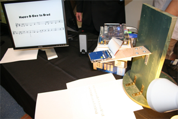

Introduction
 The Discotective is an Optical Music Recognition (OMR) system. This is similar to an OCR system except that instead of recognizing text, it reads musical scores. OMR systems take in an image of a sheet of music, apply image processing algorithms, and output the captured song as an audio signal.
{kind=link}
Our main motivation was to help beginning musicians to read sheet music. Learning to read musical notation can be difficult, especially when the reader does not know how the music should sound. A possible solution to this problem is an OMR system that converts sheet music into its corresponding sounds. The Discotective allows a user to quickly get a sense for the music they are learning, helping him or her to learn more effectively. A secondary commercial value is the possibility for digital archival of music. Digitally storing music in a MIDI file for example, as opposed to an image scan, requires less memory and allows users to play the song or even make edits.
This project was completed as a senior design project for EECS 452: Digital Signal Processing Laboratory at the University of Michigan.